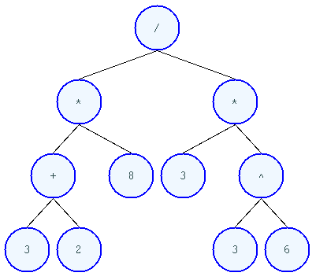

Masamune
Table of Contents
- 1. Introduction
- 2. Installing
- 3. TODOs
- 3.1. stage 1: alpha
- 3.1.1. TODO automate installation of
- 3.1.2. TODO install sbcl to correct location or point emacs to correct sources
- 3.1.3. TODO leverage portage USE to ensure that systemd is not pulled in under any circumstances
- 3.1.4. TODO lock lisp code + clone stable optima / Alexandria combination
- 3.1.5. TODO ensure slime+swank are loaded from the git repo in ~/quicklisp/local-projects/ in default build
- 3.1.6. TODO unified documentation
- 3.1.7. TODO remove all text editors other than emacs/climacs
- 3.1.8. TODO bind the debugger in all threads, currently errors get nesed up to sb-kernel:*maximum-error-depth*, causing problems when I attempt to join an IRC channel
- 3.1.9. TODO move all data storage into PCLOS
- 3.2. stage 2: beta
- 3.3. stage 3: gamma
- 3.3.1. TODO purchase sexp printer for haskell's Language.C.AST
- 3.3.2. TODO cut all dependencies on portage / funtoo
- 3.3.3. TODO add SBCL's `save-lisp-and-die' to state saving
- 3.3.4. TODO move stutmpwm interactive eval into the mode line, and unify it with the climacs and conkeror mode lines
- 3.3.5. TODO Uber browser search
- 3.3.6. TODO lispy audio
- 3.3.7. TODO common lisp only editor
- 3.3.8. TODO Removing OpenGL
- 3.3.9. TODO removing X
- 3.3.10. TODO adopt all good ideas from related technologies and avoid their mistakes
- 3.3.11. TODO unify console mode and graphical UNIX
- 3.1. stage 1: alpha
- 4. FAQ
- 5. Supported hardware
1 Introduction
the western education system is dead1. dead as the west itself
the problem is socialism. we know how to build a functional university system; admittance based on intellect alone. that the no silicon valley startup or discussion in the public sphere originates from these coordinates is positive proof that english speaking society faces far more serious issues than a broken education system. do you find yourself marveling at the pinnacles of human achievement that are Apple, Facebook, Twitter and Groupon? do you find your govenment capable and conscious? are you a pig rooting for scraps amongst perls? no? perhaps then, you favor the sane interpretation: technological stagnation and systemic incompetence propped up by increasingly worthless fiat. a solution the to education problem which aims to take advantage of the latent computing power must also take into account the problems of the current computing stack and broken culture that created it.
in computing precious little progress has been made since the 80s. one of the root causes of this stagnation is the family of programming languages taught in universities worldwide. in the new egalitarian establishment it is of course passé to mention this. asking a grad student/googler/software engineer "which programming languages are appropriate for professional programming and why?" invariably yields the party line "they're just tools and like any tool, they've uses in different problem domains." in the sense that tflint arrowheads were useful at one point, sure. this in no way makes it appropriate to revert to archery when one has the means to manufacture AK-47s. consider the following mathematical expression.
(3 + 2) * 8 / 3 * 3^6
Unrolling and full parenthesizing yields,
(((3 + 2) * 8) / (3 * 3^6))
when computers execute programs, or humans mathematics, the order of operations must be taken into account. one way to notate the previous expression to remove such tasteful ambiguities present in mathematical notation is to move operators to the front of each parenthesized list, passing the remaining elements as its arguments (this is known as prefix notation).
(/ (* (+ 3 2) 8) (* 3 (^ 3 6)))
this notational scheme has a direct mapping to the program's abstract syntax tree (AST), the essence of computation. rendering the AST of the previous expression,

the only way to manipulate a program while retaining the semantics of the programming language is by manipulating its AST. the alternative, hacking at strings and maintaining their correspondence to the semantics of the language in one's head destroys the ability to determine correctness and programs written in this fashion must be repaired or replaced when correctness eventually becomes a requirement. this is a massive waste of time, so programmers have developed standard techniques to access and manipulate ASTs programmatically. the clever way to go about this is to give a language syntax so intimately tied to its AST that the programmer need not differentiate between the two. PL families employing this strategy include Lisp and Forth.2
the verbose, error-prone way to go about this is to build elaborate parsers that consume strings devoid of semantics and return strings devoid of semantics for human consumption or an AST object for machine interpretation. compare the following:
# the program in question
$ cat test.cc
int f(int x) {
int result = (x / 42);
return result;
}
# the human readable representation of its AST
$ clang -Xclang -ast-dump -fsyntax-only test.cc
TranslationUnitDecl 0x5aea0d0 <<invalid sloc>>
... cutting out internal declarations of clang ...
`-FunctionDecl 0x5aeab50 <test.cc:1:1, line:4:1> f 'int (int)'
|-ParmVarDecl 0x5aeaa90 <line:1:7, col:11> x 'int'
`-CompoundStmt 0x5aead88 <col:14, line:4:1>
|-DeclStmt 0x5aead10 <line:2:3, col:24>
| `-VarDecl 0x5aeac10 <col:3, col:23> result 'int'
| `-ParenExpr 0x5aeacf0 <col:16, col:23> 'int'
| `-BinaryOperator 0x5aeacc8 <col:17, col:21> 'int' '/'
| |-ImplicitCastExpr 0x5aeacb0 <col:17> 'int' <LValueToRValue>
| | `-DeclRefExpr 0x5aeac68 <col:17> 'int' lvalue ParmVar 0x5aeaa90 'x' 'int'
| `-IntegerLiteral 0x5aeac90 <col:21> 'int' 42
`-ReturnStmt 0x5aead68 <line:3:3, col:10>
`-ImplicitCastExpr 0x5aead50 <col:10> 'int' <LValueToRValue>
`-DeclRefExpr 0x5aead28 <col:10> 'int' lvalue Var 0x5aeac10 'result' 'int'
and,
(lambda (x) (/ x 42))
both communicate the same program (a function which returns its single argument divided by 42). The former shows a parser from the Clang project printing the AST corresponding to the preceding C++ program and the latter uses prefix notation (also known as Lisp notation, also known as s-expressions) to remove the need for such machinery entirely. the difference in verbosity between these two examples is representative of the fundamental differences in character between their lineages. ALGOL derivatives (the former) lack a straightforwards correspondence between the textual representation of the program and its AST and reliably create programs that cost millions of dollars, 10x the number of staff and produce 10x more code than equivalent programs written in languages with a straightforwards correspondence between the AST and the program's textual representation. this (unsurprisingly) results in an achievement gap.
lisp is superior3
the people surrounding symbolics were aware of this 30 years ago. everyone today is blind.
(Symbolics 3D is featured at 10 minutes and 28 seconds, though it occurs throughout)
cut out as much algol as possible, make it easy to do so 'in anger
people speak of interactive textbooks - but all of them suck - you can change only… the things the instructor thought you should be able to change. the point is to have everything as part of an integrated whole, so if the student happens to be more curious, adventorous or for whatever reason, they can change whatever they feel like changing - on a whim, without waiting for the programmer behind the whole thing - if they're more intellegent, be so, do it.
you've the vocabulary to teach things on the bleeding edge, EG, FPGA lessons. Merge documentation and lessons and pedegogy into what it is - learning.
Building on the web, make use of anything
You've already got a working interface specification for the research establishment. Replace things peice by peice. This is what people should mean when they derp about "incremental development, user feedback and iteration" What it specifically doesn't mean is take the first thing that comes to mind and "ship it". Wtf are you pepole thinking.
If you're reading this in a browser (e.g., on github), I recommend using the html-version of this page. It is kept up to date in an automated fashion and you'll only manage to irritate yourself by reading the following in github's approximation of org-mode formatting.
- documentation (current borked b/c of gentoo's USE flag problems - cyclic dependencies)
- Conkeror browser hooked up to parenscript. - build a repl for it?
- the best GUI library available on current architectures (CLIM - Commmon Lisp Interface Manager).
- millions LoC less than the browser, at least 10x more expressive.
- based on funtoo, sources for all programs are included by default.
- symbolic algebra via Maxima
- 3D plotting facilities (animation, zooming etc.) No gnuplot or browser hackery.
- state saving and restoration (currently broken)
- lesson system
- habit system
- dashboard that reports e.g., LoC for the entire system.
- js->ps transpiler (needs work)
The browser, window manager, gui library and emacs are all connected to the same common lisp process and are explorable at runtime. Conkeror is based on Emacs and shares some of the same conceptual foundation, thus,the whole experience feels very lispy. The lessons system is 'dialed-in'. For example, you can specify that the user is to scroll to 80% of a particular URL,at which point you want the windows arranged 1/2 emacs 1/2 clim gui and XYZ files open with a (emacs) window arrangement just so. The state saving facility allows for saving saving and restoration of all URLs, scroll locations, files and window arrangement on a whim. CLIM gui applications that obey the recommended architecture can also trivially plug into this system.
There are several other things that simply "make sense", but have somehow not found their way into mainstream linux. One of which is the dashboard. Currently it lists how many lisp LoC and projects are running on the entire machine. It also manages the habits system and allows for one to say,practice mathematics for 1 hours a day without fail,at which point it restores the state prior to starting the habit.
All state is saved via persistent CLOS by default. no explicit transactions etc. necessary. Just `setf'the state of the object in question.
1.1 master plan
1.2 main concepts
1.2.1 common lisp
1.2.2 the browser
function.doc = ps repl pattern
1.2.3 emacs
1.3 why lisp?
1.3.1 forwards compatible
The standards problem (http://xkcd.com/927/) can be stated as follows: you'll inevitabely run into an issue where the programming language you're currently using doesn't have the means to concisely express <whatever>. Confronted with this most switch to a new language or in some cases, make a new one that can express the concept. In this situation, the standard in question is the programming langauge itself, a formalization of the ideas you are allowed to express.
All programming languages, regardless of how the programmer feels about at it4 have a data structure known as an AST (abstract syntax tree). Consider the following mathematical expression:
(3 + 2) * 8 / 3 * 36
Unrolling and full parenthesizing yields,
(((3 + 2) * 8) / (3 * 36))
when computers execute programs, or humans mathematics, the order of operations must be taken into account. one way to notate the previous expression to remove such tasteful ambiguities present in mathematical notation is to move operators to the front of each parenthesized list, passing the remaining elements as its arguments (this is known as prefix notation).
(/ (* (+ 3 2) 8) (* 3 (^ 3 6)))
this notational scheme has a direct mapping to the program's abstract syntax tree (AST), the essence of computation. rendering the AST of the previous expression,
http://postimg.org/image/nf6lbyw2h/
For all intents and purposes a program notated in prefix notation is the AST of a program as the correspondence between any rendering of it is bijective. Note that no information has been lost and that this same AST corresponds to both of our programs ( (3 + 2) * 8 / 3 * 36 and (/ (* (+ 3 2) 8) (* 3 (^ 3 6))) ). It could be said that the AST is the 'actual' program as it is the same regardless of the language that we're using to describe the program.
If you with to write a program that acts on other programs (a metaprogram) the only way to do this while retaining the semantics of your language is to "unroll" it into the AST, manipulate the AST directly and then generate source code from the AST. The benefit of doing this is that the transformation isn't lossy and you act on the structure of the program as it actually is, as opposed to the syntax heavy "human readable" representation of it. The alternative to this to use regular expressions to hack a strings, a crude tool which cannot respect the semantics of the language (example for the reader: try detecting a false positive without building a full parser for the language - which requires more than regexs).
So what does this have to do with standards? Well, if we say that our "programming language" is the standard, the compiler is a program which checks that the ASTs you feed it comply with the standard. Accepting non-compliant ASTs means a different language, ie, a new compiler|standard. This isn't entirely true however, languages have abstractions that allow you to build new "AST nodes" into the "standard" - the classical way of doing this is with functions, Add a function and the "standard" will now accept an AST node that looks like this:
my-new-function / | \ arg1 arg2 arg3
And this is where things get interesting. most languages don't have parsers and the tooling that allow the programmer to accept strings of the language, parse it into the AST, manipulate it and generate language. This is a real shame, becuase this is awfully useful stuff. Common Lisp, a language designed by the Smart People solves this problem (the standards problem) entirely. The abstraction for doing this is called macros. Macros allow you to manipulate the AST passed to them prior to passing them off to the compiler. This may sound somewhat complex to implement but Lisp is homoiconic (written in its own data structures) so you can actually use the same language you use in your day to day programming to manipulate its AST - in effect extending the language|standard to accept any sort of AST you can dream up.
Reader macros: Information can never be seperated from presentation, and CL macros naively only serve to manipulate prefix notation explicitly notated in parentheses. Reader macros allow you to extend this to anything you deem fit and, quite importantly, supply a shared vocabuarly for both human and machine for which to discuss syntax. the significance of this is extremely easy to underestimate. In practice it gives the individual to express his ideas about language to both the machine and his fellow programmers in the same terms - this is incredibly freeing. For example, say that someone has introduced a reader macro for the syntax #[{…} …] which creates a vector filled with hastables and you find this to be completely stupid. The reader macro system also allows you to trivially walk the AST of the program prior to macroexpansion and macroexpand them into the native constructors in place of the new syntax - and then add it to all possible occurrences prior to commiting (eg, if you don't feel like debating the issue on a shared codebase).
When you get down to it, most software engineering tasks are actually tree traversals and writing parsers is tedious, so people approximate and use regular expressions. What many have not discovered is that this actually ends up creating more work in the long run you generate a bunch of false positives that you've got to manually weed out. Lisp programmers (sane ones anyway, who understand why they have the tools they do at their disposal) simply never encounter such false positives. Humans are simply not very good at thinking on the level of "move two characters forwards after the \"&\" check for a [ then take the next few numbers seperated by \",\" BUT ONLY numbers, and then terminate in a \"]\" unless in a \"#!\" block at which point look for a terminating \"}\" instead - but if the \"#!\" was actually a \"!#\", then a \"|\" is OK too." and then applying their mental model of the parser to 10MM LoC - this sort of thing is better left to machines, and the smart way to do this is using fully-parenthesized preifx notation because parsing (and escaping) such a structure is easy (like 90loc in any language - Ruby's parser is 10k lines of C by the way, and it is only one of 800+ programming languages.).
Being written in a single (extensible) language|standard is extremely important. No matter the problem you are confronted with none of your tooling has to be rewritten - a huge waste of time for all other programmers who spend their much of their lives creating Emacs modes for the mayrid syntaxes for config files etc. etc. they continue to add to in a completely ad-hoc manner.
Another nice property of Lisp notation (fully-parenthesized preifx notation, also known as s-expressions) is that even if your program/compiler doesn't currently accept the AST/code/data/information you're being handed, the structure of sexps is self-descriptive. EG: if you get something that looks like this (log :time "Thu Dec 4 06:15:20 2014" :message "foobars") you just add a function `log' that has two keyword arguments :time and :message - sure, it's stupid that that you're forced into using keyword arguments when (log <time> <message>) would be shorter - but wait! you can just walk the tree of all the log messages you've got to process restructure them and move on without having to worry about the syntax seperating you from the AST.
There are many other lovely properties of Lisp codebases that blossom from this design, eg: predictable amount of time to solve tooling problems b/c you know that there can't possibly be an error in any one of the random parser introduced by ~ALGOL programmers at a million points in their toolchain. However I'm going to leave those for another day.
when you fail to do this you end up like this guy. http://www.youtube.com/watch?v=TS1lpKBMkgg , Mr. Lemming won't use common lisp
there are several very good points made in this video that apply to all software systems in particular I liked the following.
"modifiability is paramount. If it isn't straightforward to modify, it will never be any good. It will never be fast. It will never be correct. And it will eventually be replaced by something modifiable… after consuming as many hours as you feed it."
see 37:39-42:50 to see Paul flipping out over IR/ASTs. His plan for the next 25 years is to attempt to solve a problem already solved 50 years ago.
"I want to programmatically generate ASTs and feed those"
"Even though this is what everybody does it's kinda nuts, why is the canonical code representation a STRING?!"
everybody, except for those who pay attention that is.
listening to him talk about the parse tree issues (and trying to get to the source from them is quite funny)
"The ast is going to be designed along side the VM"
wait, like every common lisp compiler ever? Shit, no way.
"I need a tight feedback loop on the thing that I'm working on right now"
wait, like every common lisp compiler ever? Shit, no way.
he then proceeds to totally miss that incremental compilation has been at thing for 30+ years.
Moron.
I'm going to steal a quote from Paul's talk, because it is exactly correct.
For the present-day darkness in the programmer's world the programmers themselves are responsible and nobody else.
– Dijkstra
1.4 Design
1.4.1 guiding principles
http://unqualified-reservations.blogspot.com/2009/07/wolfram-alpha-and-hubristic-user.html
- It's yours. All the sources that can be included have been, along with the information necessary to bootstrap yourself into a complete understanding of the system.
- Be robust. E.G., if you had the misfortune to end up in a totalitarian Marxist regime (USSA, circa 2015) Masamune should have the tools to aid you in getting out - with or without internet.
- Common Lisp only. Other languages are not currently supported and will not be supported at any time in the future.
- Expressive power before security and convenience.
- security
- sanity
reproducibility
freedom to disagree
as close to the metal as possible, supporting unusually sane hardware
Using Masamune though a VM will not be supported now or at anytime in the future. If you figure it out, good for you. Don't submit a pull request, host the instructions somewhere else, I'm not going to link to them.
1.5 Security
Unlike other linux systems Masamune has no concept of users, this is because the current security models are stupid. There is one user, root. Use strong passwords and don't store anything valuable on the machine.
Required reading:
On the Insanity of Computer (in)-Security
S.NSA first product - The Cardano
Why I suspect Schneier is a US agent
How to airgap. A practical guide.
Breaking A Bitcoin Brainwallet
One result of this is that the directory structure is slightly different than what you may be accustomed to. your home directory is /root/.
The long-term plan is to offer a security model catered to those who plan to use their machine in the bitcoin economy, not so much as entertaining the notion of interacting with a fiat bank. This will probably have to wait until Masamune is 90% feature complete.
1.6 code freeze
- SBCL-1.1.18
- emacs-24.4
- Maxima-?
- conkeror & XULrunner versions are described in conkeror.lisp
Feel free to argue the point that a different version of XYZ should be used instead. These were chosen because they all build on my boxen today without any issues.
1.7 Misc style comments
Instead of shadowing the name of e.g., Alexandria's `format-symbol', I'll append a '%' to the front to indicate a slight difference from expected behavior.
I've chosen to use the special variable convention introduced in Let over Lambda
A traditional naming convention in Common lisp is to prefix and postfix the names of special variables with asterisk characters. For example, we might've chosen to name our
temp-specialvariable*temp-special*. Since this convention is almost like having another namespace for dynamic variables, diminishing their duality with lexical variables, this book does not follow it exactly.The asterisks are merely convention and, fortunately Common Lisp does not enforce them. Not only can we leave the asterisks off special variable names, but we can add them to lexical variable names. Maybe it is a question of style. Which is the lesser fashion crime: lexical variables with asterisks or special variables without? I tend to think the less verbose of the two. Also, the names of lexical and special variables can be gensyms, a concept that transcends print names on symbols.
So, as mentioned, this book hijacks the usual asterisk convention. Instead of
Asterisked variable names indicate special variables.
this book uses
Asterisked variable names indicate special variables defined by the standard.
My largest motivation for dropping these variable names earmuffs is simple and subjective: I think they are annoying to type and make code look ugly. I will not go so far as to suggest you od this for your own programs, just mention that I have been leaving off the earmuffs for years and am very content with Common Lisp
Let over Lambda, pg. 74
You'll note that almost everything is in the masamune or masamune-gui package. Until it becomes clear the base set of abstractions don't need much more work I'm going to leave this.
1.7.1 TODO review common lisp style guides and codify
2 Installing
2.1 Introduction
but what about my dot emacs and dot sbcl?
You should have two computers available if you plan on installing Masamune as the machine you're installing it on will be without internet access at several points in the install process. The process is as follows.
Install funtoo linux using Funtoo install guide with the following modifications:
2.1.1 Stage 3 tarball
Use the latest funtoo-stable stage3 tarball.
2.1.2 Wifi
The install guide doesn't state it anywhere, but it as long as you use network manager it includes an ncurses gui, which is a lot more convenient than, e.g., addwifi -S wpa -K 'pass' network.
When you come the that part of the guide,
emerge networkmanager rc-update add NetworkManager default
Instead of whatever it is they're recommending. nmtui is the shell command to launch the ncurses gui.
2.2 post funtoo-install
NOTE: If you see a message like "ModemManager[\\d]: <warn> Couldn't find support for device at '[a-zA-Z/0-9]*': not supported by any plugin" you can probably ignore it. Press RET to get a login prompt.
Enable wifi via nmtui and run the following
emerge git emerge sbcl cd ~/quicklisp/local-projects/ && git clone https://github.com/gabriel-laddel/masamune.git sbcl --load ~/quicklisp/local-projects/masamune/build/cripple-mode-install.lisp
2.3 Emacs and CL customizations
the files emacs-customizations.el and lisp-customizations.lisp get loaded at the end of the init process. think of it as a replacement for your .emacs and .sbclrc files.
2.4 Debugging
journalctl --no-pager
http://jvns.ca/blog/2014/04/20/debug-your-programs-like-theyre-closed-source/
3 TODOs
3.1 stage 1: alpha
3.1.1 TODO automate installation of
3.1.2 TODO install sbcl to correct location or point emacs to correct sources
3.1.3 TODO leverage portage USE to ensure that systemd is not pulled in under any circumstances
3.1.4 TODO lock lisp code + clone stable optima / Alexandria combination
Though quicklisp/asdf allows you to get different versions of a dist it lacks the ability to lock specific projects to specific versions of libraries and enforce no dist upgrades on stable software. I ran into an issue with a combination of optima / alexandria that can be resolved by loading the following commits:
Optima commit: b2b9e325e09f8c9af1abf7dedc3b072e23318a70 Alexandria commit: b1c6ee0
3.1.5 TODO ensure slime+swank are loaded from the git repo in ~/quicklisp/local-projects/ in default build
3.1.6 TODO unified documentation
The portage USE flag 'doc' will cause circular dependencies by default
3.1.7 TODO remove all text editors other than emacs/climacs
3.1.8 TODO bind the debugger in all threads, currently errors get nesed up to sb-kernel:*maximum-error-depth*, causing problems when I attempt to join an IRC channel
3.1.9 TODO move all data storage into PCLOS
3.2 stage 2: beta
3.2.1 TODO translate useful code to CLIM / CL
3.2.2 TODO advice system
3.3 stage 3: gamma
3.3.1 TODO purchase sexp printer for haskell's Language.C.AST
3.3.2 TODO cut all dependencies on portage / funtoo
3.3.3 TODO add SBCL's `save-lisp-and-die' to state saving
3.3.4 TODO move stutmpwm interactive eval into the mode line, and unify it with the climacs and conkeror mode lines
3.3.5 TODO Uber browser search
http://lifehacker.com/5971715/five-custom-searches-you-should-enable-in-your-browser-right-now
Sure! So I made a js scriptlet that can be used to enhance any normal search url with a lot more wildcards and hosted it here http://jsfiddle.net/mdegat01/WSLak/. Just like a normal search url you put the url at the front (replace the url variable with the new one you want) and put in wildcards for where you want dynamic text inserted. However, instead of just getting %s afterwards you get 7 now:
%e = enterred text (except ending w, t, or c)
%h = highlighted text on page
%q = search string (equivalent to (%h %e).trim())
%d = domain of current page
%u = full url of current page
%t = title of current page
%l = current location (format is '{curr lat} {curr long}')
This allows you to make some pretty nifty search engines. Here are some of the first examples I made to test if everything was working:
www[dot]google[dot]com/maps?q=%q%20near%20%l
Map all things that match {typed or highlighted text} near me now
www[dot]google[dot]com/maps?saddr=%l&daddr=%q
Give me directions from where I am now to {typed or highlighted text}
www[dot]downforeveryoneorjustme[dot]com/%(q||d)
Check if the site is down. That's a fallback ||, javascript style, basically use what I
typed/highlighted or (if nothing is enterred) use the current domain
www[dot]google[dot]com/search?q=cache:%u
Visit google's cache of the current page if it's down
www[dot]google[dot]com/search?q=site:%d%20%q
Highlight or type text and search it on the current domain via google
www[dot]google[dot]com/calendar/event?ctext=%q∾tion=TEMPLATE&pprop=HowCreated:QUICKADD
Highlight or type text and have it quick added as a google calendar event
www[dot]urlvoid[dot]com/scan/%(h||u)
Hopefully highlight and scan a url but if you already went to it scan that instead
Additionally, even this is useful:
{Any normal search site}%q
Since %q is highlighted text as well it allows you to search the search engine of your choosing using selected text. I don't know about you but that's been something I wanted for a while, Chrome only lets you search the default search engine with highlighted text if you right click.
I also tossed in the benefit of choosing where your results open dynamically (that's what the w, t, c thing is talking about after the %e). If you type in a w at the end of your search text it will open the result in a little popup window, a t opens it in a new tab and a c (or nothing) opens it in the current tab.
The only kind of annoying part is if your search engine url has '%s' anywhere in it, chrome won't let search with no search text (can't just type the keyword and press enter). So if you just want to search on selected text you must use one of the w, t, or c keywords, it won't get added to your selected text for the search but it will make chrome think you are searching for something.
Instruction Note: I put instructions with the fiddle for packing the js and such, the only other thing I'd add is it seems jsFiddle is not friendly to copy and paste. It adds an extraneous, illegal invisible character to the end. If you paste it into notepad first you can delete the character (it will look like a ?) and then it should be fine.
3.3.6 TODO lispy audio
#+BEGINSRC bash
flite -voice kal16 -t testing #+ENDSRC bash
review the following codebases
- pocket sphinx
- sphinx2
- sphinx3
- sphinxbase
- cl-pulseaudio
3.3.7 TODO common lisp only editor
see https://github.com/capitaomorte/sly for a rethinking of SLIME+SWANK. In the new Lisp editor there are a few things that are needed out of the box we don't have today in anything else. persistant, cl-ppcre searchable rings, slime eval, eval in frame etc. that (possibly) specializes on the place in the 'global-tree' of such things. keep track of all undefined functions etc. within the program even when the sexp is compiled keep track of "" matching within strings? with-open-file autocompletion (ie, just give me a stream name and complete symbols - can other forms use type inference to determine intermediate symbol names? I generally don't care much what they're called) full english / todo editing integrated into the comments index all codebases loaded into the lisp image for commands like `who-calls' detect invalid lambda-lists testing out of the box + stats on what is untested & tested apropos (cl-ppcre regex) smart updates of packages and .asd files according to your exports at the repl better autodocs autocompletion everywhere that works across packages (ie, pathnames, names should complete in both repl and buffers) class browser (show methods of class etc.) structure editing as the default multiple repls repl into other boxes works out of the box autcompletion on common forms, defclass, etc. (redshank style?) disassembler better inspector - if I've a image / video / audio on one of my objects I should see it (obviously, resize etc.) renaming files should update the .asd and also take care of any documentation references. smart renaming mechanisms, smart argument list changes- notify me what else needs to be updated when I update a function – this should carry through to the documentation of the codebase a few 'flavors' of asdf-compiling a system, that is, I want to have some settings ranging from "fast" "debuggable" and be able to compile a single system as such and get stats on how it works.
- TODO removing Emacs
Emacs is currently kept around to perform the following tasks
- reading info files
- Magit
At some point in time someone sane will get fed up with git and write a CL-aware alternative, but until then we're stuck with Magit.
- reading pdfs
I don't plan on spending much of my time reading .pdfs in the future, but when the need arises (converting an idea in some paper to a vertex in the knowledge map) it will be nice to have Emacs around.
the docview program for Emacs converts .pdfs into .png files for viewing. one could conceivably use ~cl-pdf to get in the case of obfuscation fall back onto a batch-mode emacs script to convert into .png for an ocr program (then output formatted the same as the .pdf using `format' hacks).
replacing it with Climacs would be wonderful.
3.3.8 TODO Removing OpenGL
I'm not the first to notice OpenGL's problems, but am the first person I'm aware of stating that the lack of a realistic plan to address them is unacceptable.4 A comprehensible open source 3D api is necessary for interesting programs of all kinds, and the medical and scientific establishments don't have access to anything better than a muggle with a netbook. Every step away from perfect directly wastes the time of the most capable humans. Were current hardware properly documented, creating a replacement would be straightforward. Alas, we live in a world where market leaders compensate for technical incompetence by withholding information from their customers. Alternative computer architectures could present solutions for this in the medium to long term5, but this does not address the need for a stable 3D api today. A sane api could be built on OpenGL, but there are issues. Consider:
- The documentation for OpenGL is either poorly written, non-existent or so outdated that it actually manages to destroy understanding. The red book claims to contain the information necessary to write "modern OpenGL" but is little more than a poorly written scam to drain desperate programmers of their precious time and money. Very few programs require more than docstrings and perhaps a single document containing the vocabulary necessary to discuss the conceptual territory. In any case, the common lisp hyperspec clearly demonstrates that large programs can be adequately documented online - no book required.
- OpenGL is entirely dependent on the the underlying hardware, and there are numerous issues at this level of abstraction. In the 22 years since it's inception no one has created an open source program to inform you as to which features are available on your computer, vendors regularly ignore bug reports, disregard the specification6 and the hardware doesn't necessarily work as advertised7.
- GLSL. It has (some of) the syntax of C and none of the semantics, the language specification is a joke and as designed, there are serious performance issues.8 There is no reason for it to exist and it needs to die.
- The surrounding ecosystem is intellectually bankrupt. OpenGLUT, SDL and X may not be part of OpenGL, but they're necessary for using it. All are broken in various ways.9 EG, when running some cl-opengl examples that make use of glut, if you press a key, with the glut window focused, it'll throw an error, and cause repaint errors (at the X level? screenshot:
 ) I realize that by abstracting over the debugging system of X, OpenGL and glut with the CL condition system, it's possible to have a sane development experience, but as far as i know no one has done this. The idiots who write SDL/GLUT/X etc. are perfectly happy to live with this defectiveness, but it wastes a massive amount of time of anyone who wishes to build even mildly sophisticated programs.
) I realize that by abstracting over the debugging system of X, OpenGL and glut with the CL condition system, it's possible to have a sane development experience, but as far as i know no one has done this. The idiots who write SDL/GLUT/X etc. are perfectly happy to live with this defectiveness, but it wastes a massive amount of time of anyone who wishes to build even mildly sophisticated programs.
CEPL ( https://github.com/cbaggers/cepl ), varjo ( https://github.com/cbaggers/varjo ) and cl-opengl ( https://github.com/3b/cl-opengl ) are massive steps forwards towards a first-class common lisp 3D system, However, having read some of the sources and the included notes, I did not get the impression that the endgame for any of these projects includes addressing any of the above problems.
There are three sane ways to solve the above:
- Ignore 3D.
- Abstract over OpenGL. Anyway this is done it is going to be hellish to due to the lack of documentation. The easiest way to approach this problem would be to exclusively target a set of hardware that get high enough OpenGL performance and is well supported by open source / reverse engineered drivers, SBCL & a few other CL compilers. If you want sane 3D development, purchase said hardware. A specific version of OpenGLX (a subset of opengl that ostensibly runs on many different chips) should be chosen as the reference implementation and completely abstracted over in a programmatic fashion using the XML versions of the specification as a basis.
https://cvs.khronos.org/svn/repos/ogl/trunk/doc/registry/public/api/wgl.xml https://cvs.khronos.org/svn/repos/ogl/trunk/doc/registry/public/api/gl.xml https://cvs.khronos.org/svn/repos/ogl/trunk/doc/registry/public/api/glx.xml https://cvs.khronos.org/svn/repos/ogl/trunk/doc/registry/public/api/readme.pdf
In the process the linux graphics stack should be cleaned up by tossing out any code that one can get rid of. See http://blog.mecheye.net/2012/06/the-linux-graphics-stack/ and http://libv.livejournal.com/22502.html for more information. Before anyone mentions it, wayland is not a solution to linux graphics woes, It addresses none of the above problems, doesn't address the problems that caused X to become such a disaster in the first place and is written by uninspired sheep. When the OpenGLX wrapper is completed, build a test farm that uses image recognition to verify that a particular codebase runs as intended. When this is completed one can begin supporting new hardware, OpenGL extensions, the remainder of OpenGL etc. A list of non-compliant chips / drivers should be published (publicly) and also mailed to the parties responsible on a rolling basis. A template like the following should suffice:
"Scientists, engineers and thinking men of all walks of life depend on your hardware / software to run mission critical systems. Version X of Y is broken in Z fashion. By producing such shoddy work you are directly preventing yourself from having sophisticated military, aerospace, healthcare systems etc. at your disposal. We urge you <Manager of K team> to fire everyone involved, open source your drivers / hardware designs and leave it in the hands of more competent people.
If you fail to do this, at the very least take the time to read the Common lisp Hyperspec and compare it against your published documentation. Then fix your docs… etc."
- Write a sane 3D api that ignores GPU acceleration entirely. Such a codebase could be actually understood (as you're not hacking around completely undocumented hardware such as GPUs) and re-write the relevant bits if hardware acceleration ever makes itself available. This will result in the most sane codebase as the abstractions will carry down to the metal. I don't know what sort of speed you could get by removing all of X, OpenGL and writing inline ASM, but suspect that it would be much faster than the pile of crud we've got today. Sure, you're not going to have shaders, lighting etc. and instead of textures you'll have stipple patterns/grayscale but IMO, most thinking persons need expressive power, not incredibly detailed graphics.
3.3.9 TODO removing X
X needs to go. I've taken a hard look at wayland and don't think it has much of a future.
relevent codebases,
https://github.com/pyb/zen http://www.cliki.net/CLX-CURSOR http://www.cliki.net/CLX-TRUETYPE http://xcb.freedesktop.org/XmlXcb/ drawings directly on the screen using CLX http://www.cliki.net/CL-VECTORS CLX events CLX manual tutorial of using CLX If we could get rid of the X keyboard system entirely that would be great.
3.3.10 TODO adopt all good ideas from related technologies and avoid their mistakes
- ankisrs.net
- Knewton
- Khan Academy
- pros
- cons
- there is far too much going on visually.
- I'm not entirely sold on the idea of hints - generally speaking, you either understand something, or not. It's not as if seeing a 'hint' (part of the solution) is going to jump start your brain into understanding. If I don't understand show exactly how the solution was derived and call it "show solution". Renaming it to 'hint' is dishonest.
- It's rather irritating that I can't sign up for a course / lesson / path and resume where I left off.
- Not personalized enough - when it knows the language I use and other such settings.
- resource intensive - slow, causes chrome to crash
- The concepts they teach are all relatively sophomoric.
- doesn't allow for mastery, as in, it's a technology that punishes experts.
- there isn't a clear flow when practicing skills
- Overload of points and notifications / badges, and it's not clear what they represent, or what their value is.
- the community page is far too cluttered
- on the 'mission' page there is far too much going on. You really only need one progress bar.
- Logos suck
- There isn't a GO button, or any clear way to quickly set off from what you were last learning.
- Okay, yes, the UI is friendly, but it's also insulting to my intelligence. Where are my options, settings etc?
- HTML5 back button doesn't work like you would expect
- slow
- Problems should fit on the screen
- I can scroll down when I'm in the middle of solving problems. Irritating, especially since there isn't anything there.
- If I get something correct, automatically move me onto the next problem
- When I get to the end of a task and see the task dashboard, there isn't a 'continue' button. This breaks my flow.
- the graphs / dashboard visualizations don't fit together to form a coherent whole. How much have I learned of the subject, course, mission? I've nfi. What is the purpose of the metrics you're showing me?
- I want an introduction to the concepts used to structure information within their app, but nothing is available. I know what a coach is irl, but no idea what it means on your system.
- it's not clear where to get started if I want to learn something new or spend my time browsing around - probably b/c the concepts are not clearly defined.
- pros
- clever
- EdX
- Coursera
- brilliant.org
- quizlet
3.3.11 TODO unify console mode and graphical UNIX
The correct way to address the situation is to:
- when the user is first dropped into cripple mode, query as to the keyboard to be used: dvorak, colemak and language if appropriate.
- ensure that a modern Emacs with SLIME and a CL compiler are available.
- document in some fashion (probably info pages) all of the things that you can possibly do in this mode.
- when the user is dropped into cripple mode for some reason, list all possible commands and promt them to assign them to keys and show them where the documentation describing cripple mode is while within emacs.
Now that i think about it, with or without X there should be a single way of configuring your keys. This is stupid.
(defun cripple-mode-console-colemak ()
"I have nfi idea why this works"
(interactive)
(save-window-excursion
(find-file "/tmp/caps-to-control.map")
(with-current-buffer "caps-to-control.map"
(erase-buffer)
(insert
"keycode 58 = Control\n"
"alt_is_meta\n"
(shell-command-to-string "dumpkeys | head -1"))
(save-buffer)))
(shell-command-to-string "loadkeys /usr/share/keymaps/i386/colemak/en-latin9.map.gz")
(shell-command-to-string "loadkeys /tmp/caps-to-control.map"))
(defun network ()
(interactive)
;; run nmtui in another virtual terminal so as to make use of ncurses
)
4 FAQ
Q: When the browser starts it also launches several windows corresponding to failed downloads. How can I remove them?
A: M-x download-remove from each one of the windows before killing with stumpwm
Q: What differentiates Masamune from TUNES and similar projects?
A: TUNES and similar projects I'm aware of have either had extremely limited scope or virtually unlimited scope (reinventing computing from the ground up). Masamune aims to be a temporary oasis of sanity, one where you don't have to continually defend yourself from the political schemes of Red hat, Pottering etc.
Unlike TUNES Masamune is immediately useful and can be installed on stock hardware today.
5 Supported hardware
This should be formalized into a list of enemies - ie, make the most automated script possible to determine hardware -> drivers mapping and then identify non-conformant chips, the companies behind them and email every employee and every public email address for the company with a list of demands. specifically demand LISP formatted hardware -> driver mappings + requests to open source drivers & microcode. The obvious benefit of having such a list being that you can gasp run a program on your computer that will tell you if masamune will work, which AFIAK no Linux distribution has today.
NixOS automatically determines drivers somewhere in the kernel modules. How does Ubuntu approach it?
'("Compaq Presario CQ57" (:x11-drivers '("x11-drivers/xf86-video-intel") :make-conf "VIDEO_CARDS=\"intel\"")
"Dell Precision M4400")
Footnotes:
http://www.lambdassociates.org/blog/decline.htm
http://www.contravex.com/2014/11/08/why-government-funded-research-is-totally-fucking-borked/
http://unqualified-reservations.blogspot.com/2007/07/my-navrozov-moments.html
http://unqualified-reservations.blogspot.com/2007/08/whats-wrong-with-cs-research.html
DEFINITION NOT FOUND.
Case Study 1: Clang
=================
Clang is a compiler front-end for LLVM co-developed by Apple, Google, Sony, ARM and Intel that serves as an umbrella project for static analysis and tooling such as the C++ to AST parser. Suppose a programmer wishes to return the name and file location of all functions in a given program. the correct way to go about this is to walk the program's AST and return all nodes on the tree that are functions. The Clang codebase for manipulating C++'s abstract syntax tree weighs in at >100k LoC.
The equivalent program in Emacs Lisp (the required amount of code will be similar in any Lisp dialect):
(defun line-number-and-sexp () (list (read (current-buffer)) (save-excursion (slime-beginning-of-defun) (1+ (line-number)))))
(defun buffer-sexps (&optional buffer line-numbers) (let* ((out) (b (or buffer (current-buffer)))) (with-current-buffer b (save-excursion (beginning-of-buffer) (condition-case nil (while t (push (if line-numbers (line-number-and-sexp) (read (current-buffer))) out)) (error nil)))) (nreverse out))) ; filter the program's TL-trees for those with the root 'defun (define a function) (filter (lambda (l) (equal 'defun (caar l))) (buffer-sexps nil t))
This is just one of the many tools in the Clang project. The remainder are equally bloated and unnecessary.
Case Study 2: Autotools
==============================================================================
"The GNU build system, also known as the Autotools, is a suite of programming tools designed to assist in making source code packages portable to many Unix-like systems. … widely used in many free software and open source packages."
– http://en.wikipedia.org/wiki/GNU_build_system
compare autotools to ASDF (another system definition facility), the CL equivalent (data generated using David Wheeler's Sloccount).
| Codebase | Estimated Development Cost in $ | Man Years | Lines of Code | # Programming Languages |
|---|---|---|---|---|
| Autotools | 5,248,975 | 38.86 | 151,168 | 8 |
| ASDF | 242,245 | 1.79 | 8,077 | 1 |
| ASDF + Quicklisp | 378,768 | 2.8 | 12,755 | 1 |
someone will inevitably complain that Autotools has some feature or another ASDF doesn't, so I've added in the metrics for the CL package manager Quicklisp (hands down the best package manager available for any language). in addition to the eight languages making up Autotools, the project introduces at least one language of its own (makefiles). this ensures that no single human being understands it and that no one ever will. there are simply better things to do with one's time than think about how to fix a braindamaged build system written in 8 similarly braindamaged languages. Autotools is of course, required for building critically important software projects eg, freebsd, Emacs.
Case Study 3: the Web
==============================================================================
the web was obsolete at its inception. there is no hypertext document format or stylesheets there are only programs. there is no cloud, there is only another's disk etc. the failure to use the terminology of computer science gives rise to plugins, extension languages, frameworks and other such definitionless monstrosities.
various parties claim that they're going to 'fix the web'. to those innocent of the implementation details it's not clear this is impossible. in practice, unless the powers that be are willing to scrap everything that the web currently is and replace it with something sane, these projects are doomed to failure through obscurity, or by succeeding only in impressing idiots. consider google's pnacl. the goal is to have a system that allows a programmer to intermix html, css and javascript with system level resources by compiling any language down to a subset of llvm bytecode. to produce anything on top of this tower of nonsense requires one to know the (moving) specifications for the 3 web languages + the language or languages being compiled down to llvm bytecode. such a system is the antithesis of comprehensibility, and thus, progress. last i checked, you couldn't so much as get error messages through pnacl and it's written in c++. yes, i know they're "working on it" and oracle is still trying to work around the idiocy that is java and africa is still trying to work around the genetic/epigenetic/cultural relationship that leads the inhabitants to destroy anything resembling order. the philosophy "if we continue to add more code order and sophistication will somehow emerge from the chaos!" produces precisely the opposite of the intended result. order and sophistication blossom from comprehensibility, not layers of obsolescent crud.
this position is diametrically opposed to that of ~every startup & corporation in silicon valley. i shall take a moment to illustrate an alternative to some of their madness. consider backend architectures, eg, code callable through an http/tcp interface. the way this is done today is by wiring (generic)functions on the backend to a url scheme invented on the fly. successful 'apis' are wrapped by hand (string hacking!) and made available as client libraries because it's more convenient to call a function (which has semantics) in one's native language than make http requests by concatenating strings (devoid of semantics).
the correct way to go about this is to use rpc. a programmer wishes to make a codebase available over the internet. he gives a list of functions he'd like to make available to another program. this program walks the ast, retrieves the documentation and argument lists of said functions, wires them to a standard calling interface over http or tcp, and exports a tree (as s-expressions) notating this information. any programmer can now walk the tree in any language they wish and transform it into a client library (the end game for any sufficiently useful or popular service). layering rate limiting, encryption, public key authentication, a standard gui, etc. on this is straightforwards.
the slime codebase for Emacs embodies this basic functionality + many entirely unrelated goodies in 46,158 loc. how many millions of loc, man hours and dollars have been spent on building apis in the past 3 years? how many millions on web browsers? some will say that "the Lisp people never had anything like the web!" this is because "the web" is an idiotic idea and networking computers together so crass that no one thought it worth differentiating from everyday interaction with a computer.
examples of people completely failing to offer realistic solutions:
(dolist (k '("http://www.joshbarczak.com/blog/?p=99"
"http://richg42.blogspot.com/2014/05/things-that-drive-me-nuts-about-opengl.html"
"http://richg42.blogspot.com/2014/06/how-i-learned-to-stop-worrying-and-love.html"
"http://timothylottes.blogspot.se/2014/05/re-joshua-barczaks-opengl-is-broken.html"
"http://www.joshbarczak.com/blog/?p=196"))
(mmb::open-uri k))
http://www.joshbarczak.com/blog/?p=154
See reason #3. The author takes the position of "no one could have predicted that putting a compiler in the driver was a bad idea". This is obviously false. Anyone thinking about the design for a day or so would realized that this is a terrible idea.
how we got here. I read this book and found it informative and entertaining: http://richard.esplins.org/static/downloads/unix-haters-handbook.pdf